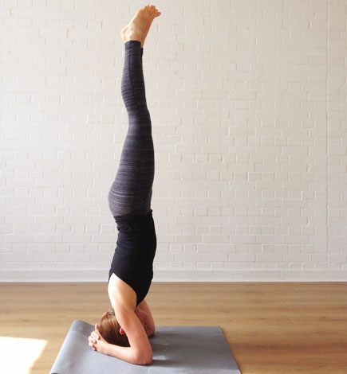

शिर्षासना(Shirasasana)
Shirshasana – The Yogic Head Stand
Sirsasana or the head stand pose is the most important among inverted asanas. In Sanskrit the word ‘sirsha’ means ‘head’ and ‘asana’ means pose. Sirsasana is considered the king of all asanas and is usually done at the end of the yoga asana practices. During Sirsasana, the entire body weight has to be borne by the muscles of the hand, neck and shoulders. Those suffering from spondylitis, slipped disk and other conditions of the neck and spine should avoid this asana. Also, people with vertigo, high blood pressure, blood impurities, thrombosis and other heart conditions should avoid this pose. Pregnant women should take special care and consult a physician before attempting this pose. Always consult a doctor or a qualified yoga instructor before taking up the practice of Sirsasana.
IMPORTANT NOTE
Don’t expect to do Sirsasana on the very first attempt. It may take many sessions of practice, before you can master it. The key is being fearless and at the same time maintaining caution while practicing it. Do it step by step, without hurrying. Get a partner in the initial stages to look over you when you practice, to prevent any fall and injuries. Those suffering from vertigo should avoid this asana or should attempt it only in the presence of yoga instructor or partner. Those with spondylitis should avoid this asana as the entire weight of the body is supported by the head and neck muscles.How to do Shirshasana (The Yogic Head Stand)?
Sit in Vajrasana or the kneeling pose.Bend forward and place the hands on the floor with fingers intertwined.
The hands and elbows should rest on the floor and make a triangle.
Slowly and carefully place the top of the head on the intertwined fingers.
Hold it firmly so that the head does not slip when the asana is performed.
Move forward and lift your buttocks up so that the thighs are perpendicular to the ground.
Now move the knees slightly inwards towards the abdomen.
Apply pressure on the hands and try to lift the trunk and legs few inches above the ground.
Hold your breath to lift yourself off the ground.
If you are able to do this, then move on to the next stage.
Lift the trunk up further till it is perpendicular to the ground.
The entire weight is supported by the hand and to some extend the head.
The thighs and legs at this stage is not vertical yet.
It is hanging in an intermediate position in front of the trunk.
Now lift and slowly move the legs from the front of the body to the back.
The legs will be hanging freely at the back. Once you have achieved this, you have a fairly good sense of balance. At this point, one may breathe normally.
You are almost there and ready to move on to the next and final stage.
Lift your legs up and make it aligned along with the rest of the body.
The whole body will be perfectly vertical at this stage.
The body weight now rest entirely on the hands and partly the head.
This is the final position.
You will feel the increased flow of blood in the head and the eyes.
During initial stages, the eyes may even turn red because of the blood accumulated in the eyes.
This is normal and there is no need to worry. Try to maintain this position for as long as it is comfortable.
Breathe normally in the final position and keep your awareness in the head region and on the breathing.
Benefits of Sirsasana (The Yogic Head Stand)
1) Sirsasana pulls the stagnant blood in the lower limbs back to the heart for purification.2) Sirsasana improves the flow of the blood to head region with many related benefits. It tones the pituitary gland which is the master gland that influences the functioning of the rest of the endocrine glands.
3) It can improve the functioning of reproductive glands.
4) It can relieve headaches.
5) The extra flow of the blood in the head is good for the eyes and other organs.
6) It can take off the gravitational pressure from the organs of the abdomen. It can help to relieve piles and hydrocele.
7) During the inverted stand, many internal visceral muscles which do not usually get stretched get exercised.
8) It can help with management of asthma.
9) It increases general vitality of the body.